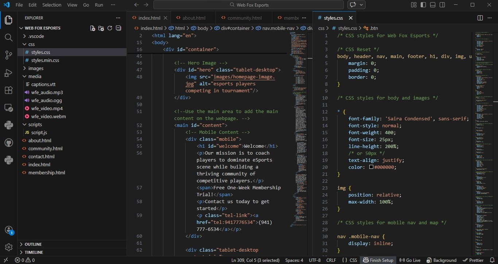

Introduction
Every developer has a starting point. For me, that beginning was Web Fox Esports, the very first website I built as a BSIT student. While the project requirements were provided by my professor, I saw it as an opportunity to go beyond instructions and create something that reflected both my creativity and my passion for esports—especially League of Legends.
This project marked the moment when web development shifted from being just a subject requirement to becoming a personal interest and long-term goal.
From Instructions to Personalization
The foundation followed structured academic guidelines. Instead of creating a generic layout, I built a concept inspired by esports branding using a bright white and orange color scheme to maintain readability and reflect energy and competitiveness.
Design and Development Approach

I focused on writing clean and semantic HTML while organizing CSS for consistency. I also applied basic responsive design principles to keep the layout structured across different screen sizes.
Technologies Used
- HTML5 for semantic structure
- CSS3 for styling and layout
- Basic responsive design techniques
Key Lessons Learned
- Clean HTML structure improves maintainability
- Consistency strengthens professionalism
- Branding influences perception
- Academic projects can become portfolio assets
Why This Project Still Matters
Web Fox Esports represents the foundation of my journey in front-end development. It reflects initiative, creativity, and continuous improvement as I grow as a developer.